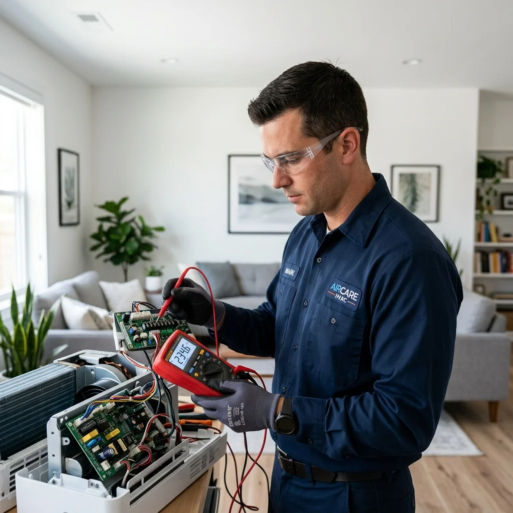

Akdeniz bölgesinin kendine özgü nemli ve bunaltıcı yaz sıcaklarında Tarsus, iklimlendirme sistemlerine en çok ihtiyaç duyulan merkezlerin başında gelir. Bu zorlu hava şartlarında evlerimizde ve iş yerlerimizde dünya standartlarında bir konfor elde etmenin yolu, premium teknolojiye sahip Toshiba klimaların yüksek performansından geçer. Toshiba, geliştirdiği inverter teknolojileri ve hava temizleme sistemleri ile sektörde kalitenin simgesi haline gelmiştir. Ancak en nitelikli mühendislik harikası cihazlar bile zaman içerisinde profesyonel bir teknik bakıma veya kararlı bir onarım müdahalesine gereksinim duyar. Tam da bu süreçte firmamız Sertler Soğutma, sizlerin bu premium konforunu kesintisiz sürdürmek adına en nitelikli teknik kadrosuyla devreye girmektedir.
Toshiba markalı klimalar, bünyelerinde barındırdıkları çift dönerli kompresör mimarileri, hassas elektronik kart tasarımları ve akıllı filtreleme sistemleri ile sıradan cihazlardan ayrışırlar. Bu denli ileri teknolojik bir yapının montajı, dönemsel temizliği ya da arıza çözümleri kesinlikle uzmanlık, mesleki deneyim ve teknik donanım gerektirir. Sektördeki yenilikçi tüm mühendislik gelişmelerini yakından takip eden eğitimli ustalarımızla birlikte, tüm Tarsus Toshiba Klima Servisi taleplerinize en kurumsal ve kalıcı yanıtları üretiyoruz. Temel gayemiz anlık çözümlerle günü kurtarmak değil, Toshiba cihazınızın fabrikasyon verilerindeki maksimum enerji tasarrufunu ve yüksek soğutma gücünü uzun yıllar boyunca stabil tutmaktır. Tarsus genelinde konuşlandırılmış yaygın mobil ağımız vasıtasıyla, ihtiyaç duyduğunuz her an konfor alanlarınızı kesintiye uğratmadan yanınızda yer alıyoruz. Kaliteli bir Mitsubishi klima servisi desteği almak cihazınızın performansını uzun yıllar boyunca korumanızı sağlar.
Klimanızın hava üfleme performansında en ufak bir zayıflama hissettiğinizde ya da cihazınız beklenmedik bir arıza uyarısı verdiğinde panik yapmadan hızlı hareket etmeniz kritik önem taşır. Erken aşamada gerçekleştirilen profesyonel müdahaleler, küçük ve ekonomik adımlarla çözülebilecek basit yıpranmaların büyüyerek yüksek maliyetli kompresör hasarlarına dönüşmesini engeller. Seçkin kadromuzla hayata geçirdiğimiz Tarsus Toshiba Klima Servisi operasyonlarımızda, gelişmiş dijital ölçüm modülleri kullanarak arızanın kaynağına tam olarak ulaşıyoruz. Yaşam standartlarınızı düşüren tüm olumsuz hava şartlarına karşı, Sertler Soğutma markasının kurumsal güvencesini seçerek klimanızı uzman ellere teslim edebilirsiniz. Bizimle iletişime geçerek sorunsuz, yüksek verimli ve bütçe dostu bir iklimlendirme deneyiminin kapılarını sonuna kadar aralayabilirsiniz.
Tarsus Toshiba Klima Servisi ve Sertler Soğutma Uzman İş Birliği
Müşteri memnuniyetini ve dürüst çalışma ilkelerini kurumsal yapımızın merkezine koyarak, Tarsus bölgesinde iklimlendirme sektörünün en çok güvenilen markalarından biri olmayı başardık. Sunduğumuz her teknik destek sürecinde, en küçük mekanik detayları bile gözden kaçırmadan titizlikle hareket etmeyi kendimize misyon edindik. Bize emanet ettiğiniz Toshiba marka klimalarınızda, fabrika standartlarına tam uyumlu ve cihazın orijinal yapısını koruyan özel müdahale protokolleri uyguluyoruz. Profesyonel olarak kurguladığımız Tarsus Toshiba Klima Servisi süreçlerimizle, cihazınızın mekanik dengesine veya elektronik sistemlerine hiçbir zarar vermeden işlemleri eksiksiz tamamlıyoruz. Güvenilir bir Vestel klima servisi desteğiyle klimanızın enerji verimliliğini en üst düzeye çıkarabilirsiniz.
Güler yüzlü hizmet anlayışımızı modern teknolojik donanım havuzumuzla entegre ederek, Tarsus genelinde en çok tavsiye edilen servis organizasyonunu oluşturduk. Firmamız Sertler Soğutma kalitesi ile tanışan klima kullanıcıları, yazın en sıcak günlerinde ani arıza stresleri yaşamak veya teknik servis beklemek zorunda kalmazlar. Teknolojik altyapımız sayesinde Toshiba klimalarınızdaki en zorlu yazılımsal kilitlenmeler veya karmaşık mekanik sıkışmalar bile çok kısa bir süre içerisinde çözüme kavuşturulmaktadır. Toshiba cihazlarının çift dönerli kompresör teknolojisi, akıllı kanat yönlendirme sistemleri ve hassas termistör yapıları hakkında derinlemesine uzmanlığa sahip ekibimiz, en kararlı adımları atar.
Teknik operasyonlarımızda zaman yönetimine olağanüstü bir hassasiyet gösteriyor, taahhüt ettiğimiz randevu saatlerinde adresinizde hazır bulunarak vaktinizi koruyoruz. Yaşadığınız klima arızasının ev yaşantınızı veya ticari faaliyetlerinizi ne denli olumsuz etkilediğini çok iyi analiz ediyoruz. Mobil acil müdahale filomuz, Tarsus Toshiba Klima Servisi taleplerinize en süratli yanıtı verebilecek şekilde Tarsus'un stratejik noktalarında konumlandırılmıştır. Sertler Soğutma markasının temel hedefi, bölge halkına ekonomik, güvenli ve sürdürülebilir soğutma çözümleri sunmaktır. Sektördeki benzersiz tecrübemiz ve kullanıcı odaklı hizmet vizyonumuz sayesinde, cihazlarınızdan alacağınız verimlilik katsayısını en üst düzeye çıkarmayı taahhüt ediyoruz. Donanımlı bir Sigma klima servisi hizmeti almak, iklimlendirme sisteminizin verimliliğini artırır.
Kusursuz ve Uzun Ömürlü Kullanım İçin Tarsus Toshiba Klima Servisi
Klima kullanımı bir süreçtir; sadece cihazı satın almak yeterli olmayıp, cihazın ömrü kurulum kalitesi ve servis periyotları ile doğrudan ilişkilidir. Toshiba kalitesi, doğru teknik servis dokunuşlarıyla birleştiğinde on yılları aşan bir süre boyunca sorunsuz çalışabilecek mekanik bir dayanıklılığa sahiptir. Bir klimanın yüksek performans göstermesi, soğutma veya ısıtma döngüsünün kusursuz çalışmasına bağlıdır. Tarsus Toshiba Klima Servisi olarak görevimiz, bu döngünün devamlılığını sağlamak ve cihazın ömrünü uzatmaktır. Bakımı aksatılmış bir klima, sadece performans kaybetmekle kalmaz; aynı zamanda ciddi enerji israfına neden olur.
Enerji verimliliği, günümüz ekonomik koşullarında hepimiz için en kritik faktörlerin başında gelmektedir. Bakımsız bir cihaz, havayı sirküle etmek için daha fazla efor sarf eder, kompresörü daha yüksek devirde çalıştırır ve dolayısıyla elektrik faturanızın kabarmasına yol açar. Sertler Soğutma olarak, klimanızın enerji verimliliğini optimize etmek için özel temizleme kimyasalları ve hassas dijital ölçüm cihazları kullanıyoruz. Filtrelerin temizlenmesi, serpantinlerin yıkanması ve gaz basıncının kontrol edilmesi, cihazınızın fabrika çıkışındaki yüksek enerji sınıfına dönmesini sağlar. Böylece hem çevreye duyarlı bir kullanım elde eder hem de bütçenizi korursunuz. Deneyimli bir Viessmann klima servisi ekibinin sunduğu teknik bakım hizmetleri, cihazınızın uzun ömürlü çalışmasının anahtarıdır.
Uzun ömürlü kullanım, sadece mekanik parçaların değil, aynı zamanda elektronik kartların da stabil korunmasıyla mümkündür. Voltaj dalgalanmaları veya aşırı ısınma, Toshiba klimaların hassas kontrol panellerine zarar verebilir. Tarsus Toshiba Klima Servisi hizmetimiz kapsamında, elektrik bağlantılarını ve klemensleri de titizlikle kontrol ediyoruz. Gevşek bağlantılar, zamanla ark yapabilir ve kart arızalarına yol açabilir. Sertler Soğutma olarak bu küçük ama hayati noktaları asla gözden kaçırmıyor, cihazınızı olası büyük arızalara karşı koruma altına alıyoruz.
Sertler Soğutma Kaliteli Toshiba Servis Hizmetlerinin Detayları
Klimalar, dışarıdan bakıldığında basit plastik kasalar gibi görünse de iç dünyalarında son derece hassas bir termodinamik mühendislik barındırırlar. Özellikle Toshiba gibi dünya devi bir markanın ürettiği klimalar, yüksek teknolojik bileşenler, akıllı kontrol yazılımları ve hassas sensör ağları ile donatılmıştır. Bu nedenle sıradan tamircilerin veya yetkinliği olmayan kişilerin bu cihazlara müdahale etmesi büyük riskler doğurur. Yetkisiz müdahaleler cihazın garanti kapsamı dışına çıkmasına ve enerji sarfiyatının katlanarak artmasına neden olabilir. İşte bu sebeplerle Tarsus Toshiba Klima Servisi hizmetinin tamamen profesyonel bir kadro tarafından verilmesi hayati önem taşır.
Profesyonel bir servis, arızanın sadece sonucunu değil, o arızaya neden olan gizli kök sebebi bularak ortadan kaldırır. Amatör yaklaşımlar ise genellikle geçici çözümler üreterek kısa süre sonra aynı arızanın daha şiddetli bir şekilde tekrarlamasına yol açar. Firmamız Sertler Soğutma, arıza tespit süreçlerinde son teknoloji dijital analizörler ve arıza tespit yazılımları kullanmaktadır. Bu sayede Toshiba klimanızın elektronik beyninde veya mekanik aksamında oluşan deformasyonlar hatasız şekilde belirlenir. Profesyonel ellerde bakımı yapılan bir klima, fabrikadan çıktığı günkü verimlilik değerlerine yaklaşarak faturanıza olumlu yansır ve bütçenizi korur.
İklimlendirme sistemlerindeki soğutucu gazların yönetimi de uzmanlık gerektiren bir diğer kritik konudur. Yanlış gaz şarjı, eksik veya fazla gaz dolumu klimanın kompresörünün kalıcı olarak zarar görmesine sebebiyet verebilir. Profesyonel Tarsus Toshiba Klima Servisi teknisyenlerimiz, Toshiba cihazınızın etiket değerlerinde yer alan gaz miktarını hassas teraziler kullanarak gramı gramına doldurur. İş güvenliği standartlarına tam uyum sağlayan ekibimiz, hem ev halkının güvenliğini hem de cihazın elektriksel emniyetini maksimum düzeyde tutar. Klimanızın ömrünü riske atmamak ve yüksek maliyetli parça kayıpları yaşamamak adına her zaman Sertler Soğutma firmamızın profesyonel çözümlerini tercih etmelisiniz.
Tarsus Toshiba Klima Servisi Profesyonel Montaj Kuralları
Klimanın doğru yere ve doğru mühendislik hesaplamalarıyla montajının yapılması, cihazın ömrünü ve verimliliğini doğrudan belirleyen en temel faktördür. Hatalı montaj uygulamaları, cihazın fazla enerji tüketmesine, yetersiz soğutma yapmasına ve ilerleyen süreçte büyük mekanik arızalar çıkarmasına neden olur. Sertler Soğutma teknik ekibimiz, Toshiba klimalarınızın montaj aşamasında alan keşfini titizlikle yaparak en ideal konumu belirler. Hava akış açılarından duvarın mukavemetine kadar her detayı inceleyerek, odada kör nokta kalmayacak şekilde kurulum planı hazırlıyoruz.
Montaj esnasında borulama mesafesinden dış ünite konsol sağlamlığına kadar her teknik detayı uluslararası standartlara göre uyguluyoruz. Bakır boruların büküm noktalarında kırılma yaşanmaması için özel aparatlar kullanıyor, gaz akışının tam bir serbestlikle gerçekleşmesini sağlıyoruz. Boru bağlantıları tamamlandıktan sonra, sistemin içerisinde kalan nem ve havayı tahliye etmek amacıyla güçlü vakum makineleriyle vakumlama işlemi yapıyoruz. Vakumlama yapılmayan sistemlerde gazın saflığı bozulur ve cihaz mekanik aşınmaya maruz kalır. Bu nedenle Tarsus Toshiba Klima Servisi hizmetlerimizde vakumlama adımından asla taviz vermiyoruz.
Dış ünitenin montajında ise terazi kurallarına tam uyum sağlıyor ve titreşimi engelleyen kauçuk takozlar kullanıyoruz. Bu takozlar, dış ünitenin gürültüsüz çalışmasını sağlarken kompresörün sarsıntıdan dolayı yıpranmasının da önüne geçer. Sertler Soğutma güvencesiyle gerçekleştirilen montaj operasyonları, Toshiba klimanızın fabrika verilerindeki en yüksek performans modunda çalışmasını garanti altına alır. Cihazınızın teknik değerini korumak ve uzun yıllar sorunsuz bir kullanım elde etmek için montaj süreçlerinizi profesyonel kadromuza güvenle emanet edebilirsiniz.
Sertler Soğutma Toshiba Daiseikai Serisi Özel Bakımı
Toshiba'nın amiral gemisi olarak kabul edilen Daiseikai serisi, plazma iyon hava temizleme sistemleri ve olağanüstü yüksek enerji tasarruf katsayıları ile iklimlendirme dünyasının en seçkin cihazları arasındadır. Bu denli lüks ve hassas bir serinin bakımı, standart klimalardan tamamen farklı, üst düzey teknik bir protokol gerektirir. Sertler Soğutma olarak, Daiseikai serisinin tüm donanımsal yapısına hakim uzman bir kadroyla özel bakım hizmetleri sunuyoruz. Cihazınızın bu üstün hava temizleme kabiliyetini koruması için her adımda titizlikle hareket ediyoruz.
Daiseikai serisi bakımlarında, plazma iyonizer filtre blokları yerinden dikkatlice sökülerek elektronik bileşenlerine zarar vermeden özel solüsyonlarla arındırılır. Bu filtreler havada asılı kalan en küçük virüs, bakteri ve toz partiküllerini elektrostatik olarak yakaladığı için temizliği olağanüstü kritik bir öneme sahiptir. Tarsus Toshiba Klima Servisi ekiplerimiz, iç ünitenin alüminyum serpantin yüzeylerini de cihazın hassas yapısına uygun antibakteriyel köpükler kullanarak tazyikli suyla derinlemesine yıkar. Hava akışı rahatlayan Daiseikai, evinizde adeta bir orman ferahlığı yaratmaya devam eder.
Dış ünitenin kondenser temizliği ve çift dönerli inverter kompresörün elektriksel akım kontrolleri de bakım sürecimizin ayrılmaz bir parçasıdır. Dijital ölçüm araçlarımızla inverter kartın frekans dalgalanmalarını analiz ediyor, cihazın stabil çalışmasını güvence altına alıyoruz. Sertler Soğutma güvencesiyle sunulan Daiseikai özel bakımı, bu premium yatırımınızın ömrünü uzatırken ilk günkü yüksek verimliliğini korumasını sağlar. Tarsus’un zorlu yaz günlerinde Daiseikai konforunuzu en üst seviyede tutmak için Tarsus Toshiba Klima Servisi uzmanlığımıza dilediğiniz zaman başvurabilirsiniz.
Tarsus Toshiba Klima Servisi Güncel Arıza Kodları Analizi
Modern Toshiba klimalar, sistem genelinde meydana gelebilecek en küçük elektriksel veya mekanik düzensizlikleri bile anında algılayan gelişmiş bir mikroişlemcili arıza teşhis yazılımına sahiptir. Cihazda bir sorun oluştuğunda, iç ünite ekranında veya kumanda panelinde belirli harf ve rakamlardan oluşan arıza kodları (örneğin 00, 01, 02 vb.) belirmeye başlar. Bu kodlar arızanın gerçekleştiği genel bölgeyi işaret etse de, sorunun asıl kök nedenini saptamak profesyonel bir analiz gerektirir. Sertler Soğutma, Toshiba arıza kodları analizi konusunda en ileri teknolojik yöntemleri uygulayarak deneme-yanılma yapmadan kesin çözümler üretir.
Adresinize ulaşan teknik ekibimiz, cihazın beynine dijital analizörleri bağlayarak geçmiş hata kayıtlarını ve sensör verilerini detaylıca inceler. Örneğin, bir haberleşme veya voltaj hatası kodu belirdiğinde, iç ve dış ünite arasındaki sinyal hatları ve elektronik kart üzerindeki gerilim dağılımları tek tek test edilir. Tarsus Toshiba Klima Servisi süreçlerimizde, deneme-yanılma yöntemini tamamen ortadan kaldırarak arızalı komponenti noktasal olarak saptıyoruz. Bu yaklaşım, müşterilerimize gereksiz parça değişim maliyetleri çıkarmamızı engeller ve zamandan ciddi tasarruf sağlar.
Mekanik arızalar veya gaz basınç hataları söz konusu olduğunda ise dijital manometre setleri ve hassas termometreler devreye girer. Gaz basıncındaki dalgalanmalar veya sensörlerin okuduğu hatalı değerler kararlılıkla analiz edilerek sistem fabrika standartlarına döndürülür. Sertler Soğutma firmamızın sunduğu bu analitik arıza tespit süreci, arızanın en doğru ve en kalıcı şekilde giderilmesini garanti altına alır. Toshiba klimanız hata kodu verdiğinde profesyonel ve kurumsal bir müdahale almak için teknik kadromuzdan güvenle destek isteyebilirsiniz.
Sertler Soğutma Toshiba Klima Akıllı Kumanda Ayarları Nasıl Yapılır?
Toshiba klimaların uzaktan kumandaları, cihazın sunduğu yüksek teknolojiyi, konfor modlarını ve enerji tasarruf fonksiyonlarını yönetmenizi sağlayan en önemli kontrol arayüzüdür. Kumanda üzerinde yer alan "Pure" (hava temizleme), "Hi-Power" (hızlı soğutma/ısıtma) veya "Comfort Sleep" (konforlu uyku) gibi özel butonlar, cihazın çalışma algoritmasını tamamen değiştirir. Ancak bazen pillerin değiştirilmesi veya yanlış tuş kombinasyonlarına basılması sonucunda kumanda ile klimanın senkronizasyonu bozulabilir. Sertler Soğutma olarak, kullanıcılarımızın bu akıllı fonksiyonlardan maksimum verim alabilmesi için gerekli tüm teknik kumanda ayarlarını ve eşleştirmelerini gerçekleştiriyoruz.
Kumandanız klimaya yanıt vermediğinde veya ekranda kilit sembolü belirdiğinde panik yapmanıza gerek yoktur. Ekiplerimiz, kumanda üzerindeki sıfırlama (reset) işlemlerini ve frekans adresleme kodlarını yeniden tanımlayarak sinyal iletişimini hızlıca yeniden kurar. Tarsus Toshiba Klima Servisi hizmetlerimiz kapsamında, cihazın alıcı göz kartının sağlamlığını da test ederek uzaktan kumandanızın en uzak mesafeden bile klima ile kusursuz konuşmasını sağlıyoruz. Ayrıca multi (çoklu) sistemlerde her bir odanın kumandasını doğru iç üniteye sabitleyerek frekans karışıklıklarının önüne geçiyoruz.
Kullanıcılarımıza servis sonrasında kumanda üzerinde yer alan bütçe dostu "Eco" modlarının nasıl aktif edileceğini ve haftalık zamanlayıcı programlarının nasıl kurgulanacağını da detaylıca izah ediyoruz. Doğru modda çalıştırılan bir Toshiba klima, konforunuzu artırırken enerji tüketimini minimum seviyede tutar. Sertler Soğutma teknik kadrosunun sunduğu bu bilgilendirici rehberlik sayesinde, premium cihazınızın tüm akıllı özelliklerini keşfederek iklimlendirme deneyiminizi mükemmelleştirebilirsiniz. Kusursuz kumanda ayarları ve dijital senkronizasyon çözümleri için Tarsus Toshiba Klima Servisi bültenimizden her zaman faydalanabilirsiniz.
Tarsus Toshiba Klima Servisi Yıllık Periyodik Bakım Sözleşmesi
Toshiba klimaların lüks konforunu ve yüksek enerji verimliliğini yılın 365 günü boyunca kesintisiz bir performansla sürdürmenin en kesin yolu düzenli bakımdır. Özellikle kurumsal işletmeler, ofisler veya evinde klima konforunu riske atmak istemeyen kullanıcılar için firmamız Sertler Soğutma, yıllık periyodik bakım sözleşmesi hizmeti sunmaktadır. Bu sözleşme, klimanızın bakım takvimini tamamen bizim güvencemiz altına alarak, zamanı geldiğinde teknik ekiplerimizin adresinize otomatik olarak ulaşmasını sağlayan kurumsal bir koruma kalkanıdır.
Yıllık bakım sözleşmesi kapsamında, yaz sezonu öncesinde detaylı bir soğutma bakımı, kış aylarına girerken ise kapsamlı bir ısıtma check-up operasyonu planlanır. Sözleşmeli müşterilerimiz, yoğun sezon dönemlerinde bile servis önceliğine sahip olarak hiçbir zaman sıra beklemek veya mağduriyet yaşamak zorunda kalmazlar. Tarsus Toshiba Klima Servisi operasyonlarımızda sözleşme dahilinde yapılan tüm bakımlarda, cihazın gaz basınçlarından elektronik kart bağlantılarına kadar yirmiyi aşkın kritik nokta titizlikle kontrol edilir ve kayıt altına alınır.
Bu düzenli takip sistemi, cihazınızın servis geçmişini net bir şekilde görmemizi sağlarken, ileride oluşabilecek büyük arızaları henüz başlangıç aşamasındayız saptayıp engellememizi mümkün kılar. Sertler Soğutma periyodik bakım sözleşmeleri, uzun vadede tamir maliyetlerinizi düşürürken klimanızın elektrik tüketimini de daima en alt seviyede tutar. Premium Toshiba klimanızı kurumsal bir güvenceyle korumak ve yıllık bakım planlamasının getirdiği ekonomik avantajlardan yararlanmak için çağrı merkezimizle iletişime geçerek detaylı bilgi alabilirsiniz.
Sertler Soğutma Toshiba Klima Sensör Değişimi Detayları
Klimaların ortam sıcaklığını, boru hatlarındaki gaz sıcaklığını ve dış ortam şartlarını hatasız bir şekilde algılayabilmesi, sistem üzerinde yer alan hassas sensörler (termistörler) sayesinde mümkündür. Toshiba klimalar, inverter teknolojisini bu sensörlerden gelen milisaniyelik verileri analiz ederek yönetir. Zamanla aşırı ısıya, neme veya elektriksel dalgalanmalara maruz kalan sensörlerin direnç değerleri bozulabilir veya tamamen kısa devre yapabilir. Sensör arızalandığında klima ortam sıcaklığını doğru algılayamaz; ya odayı aşırı soğutarak buzlanma yapar ya da erkenden durarak yetersiz soğutma üretir. Sertler Soğutma olarak, sensör arızalarını en ileri dijital ölçüm yöntemleriyle saptıyor ve orijinal yedek parçalarla değişimini gerçekleştiriyoruz.
Sensör değişimi işlemi, deneme-yanılma ile yapılamayacak kadar hassas bir elektronik müdahale gerektirir. Teknik ekiplerimiz, arızalı olduğundan şüphelenilen sensörü yerinden sökerek ohmmetre cihazlarıyla oda sıcaklığındaki direnç (kiloohm) değerlerini ölçer. Sensörün okuduğu değerler Toshiba'nın orijinal fabrika teknik tablolarıyla karşılaştırılır; en küçük sapma bile tespit edildiğinde sensörün ömrünü tamamladığı kesinleşir. Tarsus Toshiba Klima Servisi operasyonlarımızda, tamir stantlarımızda her zaman Toshiba modellerine uygun orijinal iç ünite oda sensörleri, boru sensörleri ve dış ünite ortam sensörleri stoklu olarak bulundurulmaktadır.
Orijinal sensör montajı yapıldıktan sonra, kablo bağlantı soketleri korozyona karşı özel koruyucu spreylerle temizlenir ve yerlerine sıkıca oturtulur. Yan sanayi sensör kullanımı, inverter kartın motor devrini yanlış ayarlamasına ve dolayısıyla cihazın aşırı enerji harcamasına neden olacağı için Sertler Soğutma olarak sadece orijinal parçalardan yana tavır alıyoruz. Sensör değişimi tamamlanan klima, test modunda çalıştırılarak üfleme sıcaklığı dijital termometrelerle ölçülür ve sistemin kararlı çalıştığı onaylanır. Cihazınızın ortam sıcaklığını tekrar milimetrik ve kusursuz algılamasını sağlamak için Tarsus Toshiba Klima Servisi teknik altyapımıza her zaman güvenebilirsiniz.
Tarsus Toshiba Klima Servisi Drenaj Hortumu Temizliği
Klimanın iç ünitesi odadaki sıcak havayı soğuturken, havanın içerisindeki nem evaporatör peteklerinin üzerinde yoğuşarak su damlacıklarına dönüşür. Bu biriken sular, iç ünitenin alt kısmında yer alan drenaj tavasında toplanır ve drenaj hortumu (tahliye borusu) vasıtasıyla dış ortama veya gidere aktarılır. Tarsus’un aşırı nemli iklim koşullarında klimalar günde litrelerce su üretebilmektedir. Zamanla odadaki tozların suyla birleşmesi, drenaj tavasında ve hortumun içerisinde çamurlu bir balçık tabakası oluşturur. Bu balçık hortumu tıkadığında, su dışarıya akamaz ve iç ünitenin altından odanızın içine, duvarlarınıza ve parkelerinize damlamaya başlar. Tarsus Toshiba Klima Servisi hizmetlerimiz kapsamında drenaj hatlarını tamamen arındıran profesyonel temizlik çözümleri sunuyoruz.
Drenaj hattı tıkanıklığı sadece su damlatma problemi yaratmaz, aynı zamanda tavanın içerisinde uzun süre bekleyen kirli su nedeniyle evinizde ağır, ekşi ve rutubetli bir kokunun yayılmasına yol açar. Sertler Soğutma teknisyenlerimiz, iç ünite kapaklarını sökerek drenaj tavasına doğrudan müdahale eder. Tavanın içerisindeki tortular özel temizleyici sıvılarla eritilir. Ardından, drenaj hortumunun içerisine yüksek basınçlı hava veya tazyikli su pompalanarak hortumun içerisine yerleşmiş olan tüm pislikler, toz yumakları ve çamur birikintileri tamamen dışarıya atılır. Hortum boyunca suyun akış eğimi de kontrol edilerek gelecekte olası tıkanmaların önüne geçilir.
Temizlik işleminin son aşamasında, drenaj tavasının içerisine anti-bakteriyel ve mantar önleyici özel tabletler yerleştirilir. Bu akıllı tabletler, suyla temas ettikçe yavaşça eriyerek hortumun içerisinde yeniden balçık ve yosun oluşmasını uzun süre boyunca engeller. Sertler Soğutma teknik ekibinin büyük bir titizlikle yürüttüğü bu drenaj temizliği operasyonu, evinizdeki hijyeni korurken su sızıntılarının elektronik aksamlara zarar vermesini de kesin olarak önler. Duvarlarınızın ve lüks Toshiba klimanızın sağlığını koruma altına almak için her periyodik bakımda drenaj hatlarının temizlenmesini uzman kadromuza talep edebilirsiniz.
Sertler Soğutma Toshiba İle Sessiz Çalışma Performansı İpuçları
Toshiba klimalar, mühendislik tasarımlarında yer alan özel aerodinamik fan kanatları ve gelişmiş inverter kompresörleri sayesinde piyasadaki en sessiz çalışan cihazlar unvanına sahiptir. Cihaz çalışırken adeta bir kütüphane sessizliğinde ortamı iklimlendirerek konforunuzu en üst noktaya taşır. Ancak klimanızdan zaman içerisinde normalin dışında tıkırtılı, sürtünmeli veya uğultulu sesler gelmeye başladıysa, bu durum mekanik bir aksaklığın habercisidir. İklimlendirme sektörünün seçkin kuruluşu Sertler Soğutma uzmanları, Toshiba cihazınızın o büyüleyici sessizliğini korumanız ve performansını yüksek tutmanız için hayati önem taşıyan bazı teknik ipuçlarını paylaştı.
Fan Kanatlarındaki Toz Birikimini Engelleyin: İç ünite fan tamburunun (silindirik fan) üzerinde biriken tozlar, zamanla kanatçıklarda ağırlık yaparak balans bozukluğuna yol açar. Balansı bozulan fan dönerken tıkırtılı ve sarsıntılı sesler üretir. Tarsus Toshiba Klima Servisi ekiplerimiz tarafından yapılan yüksek basınçlı fan temizliği, cihazı tamamen gürültüsüz formuna geri döndürür.
Dış Ünite Kauçuk Takozlarını Kontrol Ettirin: Dış ünitenin monte edildiği demir konsollar ile cihazın arasına yerleştirilen kauçuk takozlar, kompresörün titreşimini emerek duvara iletilmesini engeller. Zamanla güneşte kuruyan ve sertleşen bu takozlar özelliğini yitirdiğinde, evinizin içinde derin bir uğultu sesi duyulabilir. Sertler Soğutma bakımlarında bu takozlar düzenli olarak yenilenir.
Gevşeyen Plastik Aksamları Sıkılaştırın: Klimanın iç ünite ön kapaklarının tırnakları tam oturmadığında veya vidaları gevşediğinde, hava akışının yarattığı titreşimle birlikte plastik zırıltı sesleri meydana gelebilir. Cihaz kapağının tam kapalı olduğundan emin olmak bu sesleri önleyebilir.
Hava Akış Önünü Kapatmayın: Klimanın hava üfleme panjurlarının önüne çok yakın konumlandırılan mobilyalar veya perdeler, havanın geri tepmesine ve iç ünitede uğultulu bir rüzgar sesi oluşmasına neden olur. Hava sirkülasyon alanının tamamen açık tutulması sessizlik için şarttır.
Periyodik Mekanik Yağlamaları İhmal Etmeyin: Fan motorunun millerinde ve rulmanlarında zamanla meydana gelen kuruma, cihazın sürtünmeli metalik sesler çıkarmasına yol açar. Profesyonel Tarsus Toshiba Klima Servisi bakımlarında bu hareketli mekanik parçalar özel lityum yağlarla yağlanarak sürtünmesiz, aşınmasız ve tamamen sessiz çalışması garanti altına alınır.
Tarsus Toshiba Klima Servisi Gerçek Müşteri Yorumları
Bir teknik servisin kalitesini, dürüstlüğünü ve işçilik başarısını anlamanın en gerçekçi yolu, daha önce o firmadan hizmet almış kullanıcıların deneyimlerine ve yorumlarına göz atmaktır. Sertler Soğutma olarak, Tarsus genelinde sunduğumuz premium kalitedeki klima servis hizmetlerinin ardından müşterilerimizden aldığımız yüksek memnuniyet geri bildirimleri ile gurur duyuyoruz. Kurumsal şeffaflık ilkemiz gereği, siz değerli kullanıcılarımızın firmamız hakkında paylaştığı bazı gerçek müşteri yorumlarını technical portföyümüzde sergilemekten mutluluk duyuyoruz. Müşterilerimizin memnuniyeti, kalitemizin en büyük tescilidir.
Ahmet T. (Kırklarsırtı Mahallesi): "Evimdeki Toshiba Daiseikai klima su damlatmaya başlamıştı ve soğutmuyordu. Başka tamirciler komple kart değişecek dedi ama Sertler Soğutma ekibi geldi, dijital cihazlarla inceledi. Meğer sadece boru sensörü arızalıymış ve drenaj hortumu tıkanmış. Orijinal parça takıp tertemiz yaptılar. Dürüstlükleri ve profesyonellikleri için Tarsus Toshiba Klima Servisi ekibine çok teşekkür ederim, bütçemi korudular."
Merve K. (Öğretmenler Mahallesi): "Toshiba klimamın taşınma esnasında söküm ve takım işlemleri için kendilerine ulaştım. Klimanın gazını dış üniteye sıfır kayıpla hapsettiler, yeni evimde de muhteşem bir vakumlama yaparak montajını tamamladılar. Randevu saatine tam zamanında uymaları ve güler yüzlü olmaları harikaydı. Tarsus’ta gözü kapalı güvenebileceğiniz tek adres kesinlikle bu firma."
Mustafa Y. (Yeni Mahalle): "İş yerimizdeki multi Toshiba sistem klimaların yıllık periyodik bakımları için sözleşme imzaladık. Sertler Soğutma teknisyenleri o kadar titiz çalışıyor ki, dış üniteleri ilaçlı sularla yıkayıp elektrik bağlantılarını tek tek sıktılar. Bakımdan sonra elektrik faturalarımızda ciddi bir düşüş fark ettik. Kaliteli ve kurumsal hizmet arayan herkese Tarsus Toshiba Klima Servisi kadrosunu gönül rahatlığıyla tavsiye ederim."
Sıkça Sorulan Sorular
Klimanın soğutma performansındaki düşüş birçok nedene bağlı olabilir. En yaygın teknik sebep boru hatlarında oluşan çatlaklardan dolayı soğutucu gazın (R410A veya R32) eksilmesidir. Bunun yanı sıra plazma filtrelerin aşırı tozlanması, dış ünitenin hava sirkülasyonunun engellenmesi veya sensör arızaları da soğutmayı doğrudan baltalar. Sertler Soğutma olarak cihazınızı yerinde dijital analizörlerle inceleyerek arızanın gerçek sebebini saptıyor ve orijinal çözümler üretiyoruz.
Evet, düzenli periyodik bakım yaptırmak elektrik faturalarınızı doğrudan ve ciddi oranda düşürür. Bakımsız bir klimanın iç ve dış ünite petekleri toz katmanlarıyla kaplandığı için ısı transfer verimi düşer. Premium inverter kompresör, odayı soğutabilmek için sürekli yüksek devirde çalışmak zorunda kalır ve fazla elektrik tüketir. Tarsus Toshiba Klima Servisi ekiplerimiz tarafından yapılan derinlemesine temizlik ve gaz basıncı ayarlamaları sayesinde cihaz minimum enerjiyle maksimum performans üretir, bu da faturanıza tasarruf olarak yansır.
Klimalar tamamen kapalı devre sızdırmazlık esasına göre üretilen termodinamik sistemlerdir. Bu nedenle normal şartlar altında Toshiba klimaların içerisindeki soğutucu gaz kendi kendine bitmez, eksilmez veya tükenmez. Eğer cihazınızda gaz eksikliği mevcutsa, boru bağlantı rekorlarında veya ünite peteklerinde mekanik bir kaçak (gaz sızıntısı) var demektir. Sertler Soğutma teknisyenlerimiz kaçak noktasını elektronik dedektörlerle bulup onarmadan asla gaz dolumu yapmaz. Sızıntı tamir edildikten sonra yapılan gaz dolumu cihazı yıllarca sorunsuz çalıştırmaya yeterlidir.
Klimadan yayılan kötü kokuların temel kaynağı, iç ünite evaporatör peteklerinin ve drenaj tavasının nemli kalması sonucu buralarda üreyen bakteri, küf ve mantar tabakalarıdır. Bu kokuları engellemek için evde sadece filtreleri yıkamak kalıcı bir çözüm sunmaz. Tarsus Toshiba Klima Servisi uzmanlarımızın uyguladığı profesyonel iç ünite temizliği kimyasalları ve anti-bakteriyel dezenfeksiyon spreyleri sayesinde, kokuyu üreten tüm zararlı mikroorganizmalar kökten yok edilir. Bu hijyenik işlem evinizdeki havayı daima ferah tutar.
İç üniteden su sızması, cihazın ortamdaki nemi yoğuşturarak oluşturduğu suyun dışarıya tahliye edilemediği anlamına gelir. Bunun en yaygın sebebi drenaj (tahliye) hortumunun toz veya çamur birikintileri nedeniyle tıkanmasıdır. Ayrıca hortumun kırılması, yukarı doğru yanlış eğim alması ya da iç ünite montaj terazisinin bozulması da suyun içeriye taşmasına yol açar. Damlayan su elektronik aksamlara zarar verebileceği için klimayı hemen sigortasından kapatmalı ve acil Tarsus Toshiba Klima Servisi hattımızla iletişime geçmelisiniz.
Gelişmiş teknik laboratuvarımızda gerçekleştirdiğimiz elektronik kart tamir işlemleri son derece güvenli ve lüks parça maliyetlerini düşüren ekonomik çözümlerdir. Sertler Soğutma olarak kart tamirinde sadece orijinal ve yüksek toleranslı mikro bileşenler kullanıyoruz. Kart üzerindeki arızalı komponent yenilendikten sonra sistem test stantlarında simüle edilerek ağır yük testlerine tabi tutulur. Yapılan işlemler ve değiştirilen parçalar firmamızın işçilik garantisi altında olduğu için, tamir edilen bir kart orijinal performansıyla uzun yıllar sorunsuz görev yapar.
Hem ekonomik hem sağlıklı olan ayar nedir? Klimaları yazın çok düşük derecelere (örneğin 18°C veya 19°C) ayarlamak odanın daha hızlı soğumasını sağlamaz; sadece kompresör motorunun durmaksızın en yüksek devirde çalışmasına ve faturanızın kabarmasına neden olur. İnsan sağlığı ve enerji ekonomisi açısından en ideal yaz konfor sıcaklığı 24°C ile 26°C arasındadır. Dış ortam sıcaklığı ile iç mekan sıcaklığı arasındaki farkın 7-8 dereceden fazla olmaması klimanın mekanik sağlığını korur ve ani sıcaklık değişimlerinden kaynaklanan klima çarpmalarının önüne geçer.
Toshiba klimaların fabrika çıkışındaki yüksek performans, sessizlik ve benzersiz enerji tasarruf değerlerini koruyabilmesi için onarımlarda mutlaka orijinal yedek parça kullanılması zorunludur. Yan sanayi veya üniversal parça olarak adlandırılan kalitesiz malzemeler, cihazın çift dönerli inverter çalışma algoritmasına ve elektronik voltaj dengelerine tam uyum sağlayamaz. Bu durum klimanın gürültülü çalışmasına, fazla enerji tüketmesine ve kısa süre sonra sağlam olan diğer mekanik parçaların da arızalanmasına yol açar. Sertler Soğutma olarak sadece orijinal parçalar tercih ediyoruz.
Vakumlama, klima bakır boru hattının içerisindeki havanın ve nemin güçlü bir vakum pompasıyla tamamen çekilmesi işlemidir ve montajın en kritik teknik adımıdır. Vakum yapılmazsa, boruların içinde kalan hava ve görünmeyen nem soğutucu akışkan gazla birleşerek aside dönüşür. Bu asit zamanla kompresör motorunun sargılarını eriterek motorun kalıcı olarak yanmasına neden olur. Ayrıca sistemde kalan hava gazın termodinamik akışını bozarak cihazın soğutma verimini ciddi oranda düşürür. Tarsus Toshiba Klima Servisi montajlarımızda vakumlama işlemi standart ve zorunlu bir protokoldür.
Firmamız Sertler Soğutma, tüm teknik servis ve onarım hizmetlerinde adil, şeffaf ve bütçe dostu bir fiyat politikası yürütmektedir. Toplam tamir maliyeti; arızanın türüne, değiştirilmesi gereken yedek parçanın niteliğine (sensör, fan motoru, kart, kompresör vb.) ve harcanacak işçilik süresine göre belirlenir. Ekiplerimiz adreste dijital analizörlerle arıza tespitini yaptıktan sonra size net bir maliyet analizi sunar. Onaylamadığınız hiçbir işlem için sizden ek bir ücret talep edilmez. Net ve kesin rakam vermekten kaçınarak her zaman en ekonomik çözümleri sunmayı hedefliyoruz.
Evet, Toshiba inverter modeller geleneksel on/off klimalara göre çok daha gelişmiş bir elektronik altyapıya, mikroişlemcili akıllı kartlara ve değişken frekanslı çift dönerli kompresör motorlarına sahiptir. İnverter klimaların tamiri, gelişmiş dijital ölçüm aletleri ve bu akıllı teknolojiye hakim profesyonel uzmanlık gerektirir. Yetkin olmayan kişilerin inverter sistemlere müdahale etmesi büyük risk taşır. Sertler Soğutma kadromuz, Toshiba inverter teknolojisi üzerine özel eğitimler almış teknisyenlerden oluşur. Yazılımsal ve donanımsal tüm inverter arızaları servisimizce hatasız şekilde çözülmektedir.
Klimaların yılda en az iki kez, mevsim geçişlerinde profesyonel periyodik bakımdan geçirilmesi teknik olarak tavsiye edilir. Yaz sezonu başlamadan önce (Nisan-Mayıs) yapılan bakım soğutma performansını zirveye taşırken ve faturanızı korurken; kış sezonu öncesinde (Ekim-Kasım) yapılan bakım ise cihazın ısıtma modunda yüksek verimle çalışmasını sağlar. Yılda iki kez Tarsus Toshiba Klima Servisi desteği almak, klimanızın ömrünü uzatır ve sizi kışın ortasında veya yazın sıcağında sürpriz, zamansız arızalarla karşılaşmaktan korur.
Kumanda çalışmıyorsa ilk olarak pillerini orijinal yenileriyle değiştirip kumanda ekranının gelip gelmediğini kontrol edin. Piller yeni olmasına rağmen klima kumanda komutlarına yanıt vermiyorsa, sorun iç ünite üzerindeki sinyal alıcı göz kartında veya kumandanın kendi verici ledinde olabilir. Akıllı telefonunuzun kamerasını kumandanın önündeki lede doğru tutup kumanda tuşlarına bastığınızda kameradan mor/kırmızı bir ışık flaşı görüyorsanız kumanda sağlamdır, sorun klimanın alıcı gözündedir. Sertler Soğutma ekiplerimiz alıcı göz değişimini yerinde kolayca yapabilmektedir.
Toshiba klimalarda hata kodları, arızanın gerçekleştiği yeri bildiren dijital sinyallerdir. Örneğin, sensör arızaları, haberleşme kopuklukları veya kompresör aşırı yük korumaları farklı kodlarla ekrana yansır. Bu kodlar ekranda belirdiğinde cihaz güvenlik amacıyla çalışmayı durdurur. Nedeni kablo kopması, oksitlenme veya elektronik kart hasarı olabilir. Profesyonel Tarsus Toshiba Klima Servisi teknisyenlerimize başvurarak bu hataların analitik cihazlarla kesin çözümünü sağlayabilirsiniz.
Tarsus genelinde stratejik noktalarda hazır bekleyen yaygın mobil teknik araç filomuz sayesinde, randevu taleplerinize en hızlı şekilde yanıt veriyoruz. Çağrı merkezimize kayıt bıraktığınız gün içerisinde, size en uygun olan zaman diliminde ekiplerimiz adresinize ulaşır. Acil durumlarda ve gece nöbetçi servis uygulamalarımızda bu süre Tarsus'un mahalle yakınlığına göre minimum seviyelere kadar inmektedir. Zaman yönetimini mükemmel şekilde yürüten Sertler Soğutma, sizi saatlerce bekletmeden sorununuzu çözerek konforunuzu yeniden inşa eder.